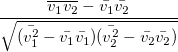

This function takes two vectors and returns a vector of moving correlation coefficients of adjacent ranges [i-back, i+forward], for a point i. The part of range beyond the input vector is dropped.

within the window [i-back, i+forward]
vector MovCoef(vector v1, vector v2, int back, int forward[, int missing])
v1
v2
back
forward
missing
Return the moving correlation vector.
Example 1
MovCoef(col(2), col(3), 20, 0);
Example 2
newbook; col(A) = {4,8,6,-1,NAN,-3,-1, 3, 4, 5}; col(B) = {1,2,3,4,5,6,7, 8, 9, 10}; col(C) = MovCoef(col(A),col(B),3,0,0); //returns [-- 1 0.5 -0.56825 -1.19763 -1.00447 -0.47434 0.65738 0.97683 0.93267] col(D) = MovCoef(col(A),col(B),3,0,1); //returns [-- 1 0.5 -0.56825 -- -- -- -- 0.97683 0.93267] col(E) = MovCoef(col(A),col(B),3,0,2); //returns [-- 1 0.5 -0.56825 -- -1.00447 -0.47434 0.65738 0.97683 0.93267]